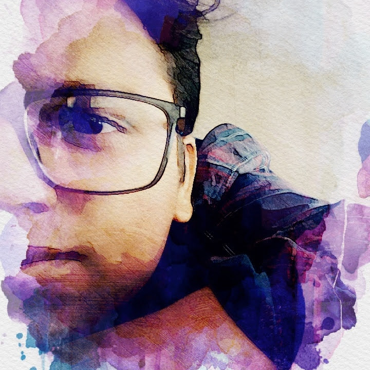

Data science · Responsible AI · Sustainability
I turn complex data into useful, lasting systems.
I’m Utpal Mishra, a Data Scientist building automation, analytics and AI products that help teams move from fragmented information to confident decisions.
01 · About
A builder at the intersection of data, people and planet.

Utpal MishraData Scientist · Product-minded technologist
My work spans data science, engineering and sustainability—but the common thread is simple: make complicated processes clearer, faster and more trustworthy.
At Logitech, I develop sustainability data products using Python, Streamlit, APIs and Snowflake: connecting fragmented sources, automating reporting, mapping product data and turning operational numbers into decision-ready insight.
Previously, I worked across forecasting, supply chain, marketing analytics, healthcare AI and open-source social-impact projects. My MSc in Data and Computational Science grounds that work in mathematical modelling and research.
PythonSQLSnowflakeMachine LearningForecastingData ProductsResponsible AISustainability
02 · Projects
Practical systems built around real problems.
A selection of automation, machine-learning and research projects that show how I approach a problem—from data and modelling to a usable outcome.
01
Data & workflow automation
Automation ecosystem
A connected automation ecosystem for integrating multi-source data, standardising transformations, producing decision-ready insights and enabling reliable delivery through applications and APIs.
- Python, Streamlit, Snowflake and API integrations
- Audit-ready workflows and reusable data layers
- Designed from ingestion through insight and action
02
Early-warning analytics
Tanzania Kesho AI
Contributed to an early-warning data product using geospatial analysis, seasonal filtering and forecasting to help communicate emerging risks through accessible alerts.
03
Education & environment
Tanzania OpenDevEd
Explored classroom temperature and environmental data to surface patterns, establish forecasting baselines and support evidence-led decisions for learning environments.
04
Climate analytics
Malaysia Climate Risk Prediction
Applied data analysis and machine-learning techniques to investigate climate-risk indicators and support more proactive, data-informed resilience planning.
05
Computer vision
Malaysia Crop Disease Classification
Worked with agricultural image datasets to support machine-learning classification of crop diseases and earlier identification of plant-health risks.
06
Research
Optimal cancer treatment
Applied optimal control and pharmacokinetic modelling to investigate therapeutic dosing strategies, linking mathematical research to a real healthcare challenge.
View research on GitHub ↗03 · Journey
Experience built across industries, focused into data products.
Data Scientist · Logitech
Sustainability data integration, reporting automation, product mapping, analytics and forecasting.
Data Scientist & Developer · Kellogg’s
Demand forecasting, inventory optimisation, marketing mix modelling, segmentation and ML quality.
Associate Analyst · Accenture / Meta
Data-led troubleshooting and marketing analytics supporting EMEA clients.
AI, data science & open-source roles
Healthcare AI, retail forecasting, NLP and social-impact machine-learning projects.
MSc Data & Computational Science · UCD
Mathematical modelling, scientific computing and optimal-control research.